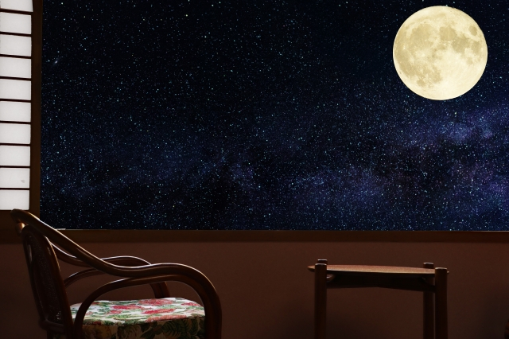

製作者のおすすめ
【30分耐久BGM】Morning / しゃろう
【30分耐久BGM】しゅわしゅわハニーレモン350ml (Fizzy Honey Lemon Soda 350ml) / しゃろう
【30分耐久BGM】2:23 AM / しゃろう【公式】
一目で分かる【厳選16曲】作業用ボカロBGM フル
エヴァンゲリオンの劇中で使用されたクラシック名曲メドレー9曲 【作業用】
ボカロ オルゴールBGM 作業用BGM 睡眠用BGM
アニソンピアノメドレー【作業用・勉強用・睡眠用BGM】
リラックスBGM!インストゥルメンタルBGM!作業用＋勉強用にも！！
ジャズ&ボサノバBGM - 作業用&勉強用BGM - 森カフェ気分！！
【作業用BGM】やる気を全開にさせるカッコイイ曲！超重低音アニソンリミックスメドレー
有名曲J-POPメドレー 2021🌾日本最高の歌メドレー || 優里、YOASOBI、あいみょん、LISA、米津玄師 、宇多田ヒカル、ヨルシカ🍁音楽 ランキング 最新 2021🍀🎃
ボカロ神曲ピアノメドレー【作業用・勉強用BGM】